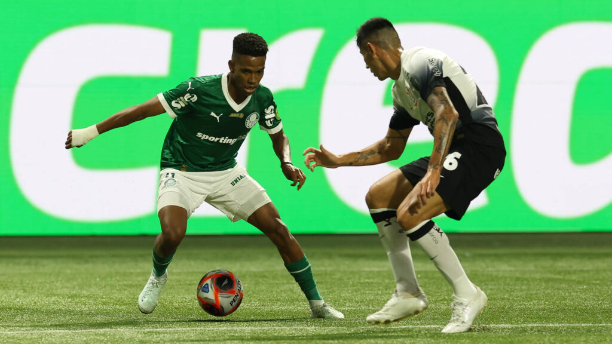
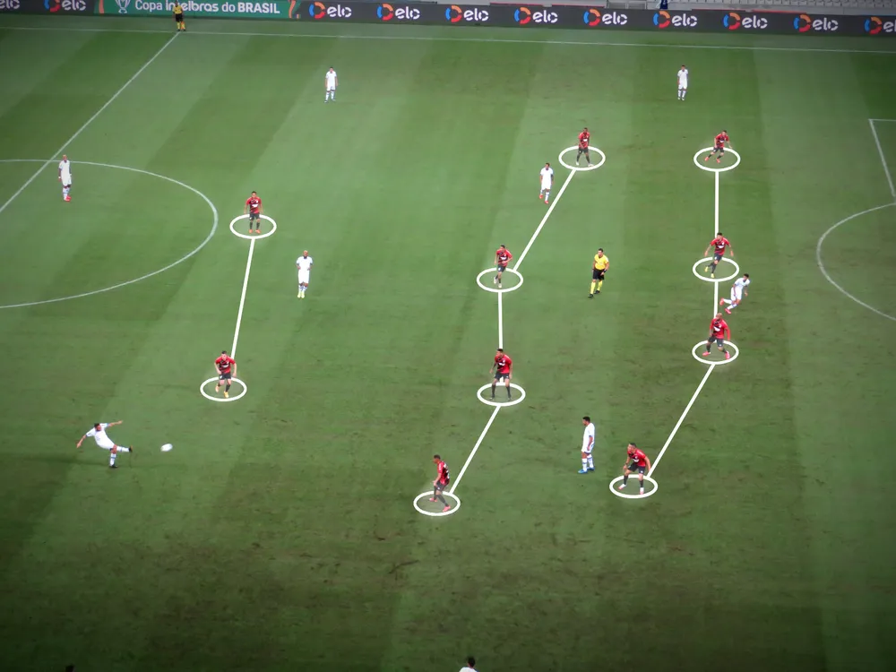

A evolução tática do futebol substituiu o improviso pela organização a partir das décadas de 1950 e 1960, quando o Brasil inovou com o esquema 4-2-4 e seleções como Hungria e União Soviética introduziram a movimentação constante de jogadores. Nos anos 1970, o esporte contrastou o sistema ultradefensivo italiano (Catenaccio) com o revolucionário e fluido Futebol Total holandês, abrindo caminho para a valorização do preparo físico, das estatísticas e dos atletas multifuncionais na década de 1980, tendência liderada pelo Milan de Arrigo Sacchi. Atualmente, as antigas formações fixas deram lugar a esquemas fluidos e de esforço coletivo, sendo o cenário dominado pelo jogo posicional de controle de bola, de Pep Guardiola, e pelo Gegenpressing, focado na recuperação frenética da posse.
As formações táticas definem o posicionamento básico dos dez jogadores de linha de uma equipe, com a numeração sempre sendo lida da defesa para o ataque e sem contabilizar o goleiro. Para estruturar melhor os setores, alguns esquemas dividem o meio-campo em duas camadas e formam disposições de quatro linhas, a exemplo do 4-2-3-1 (quatro defensores, dois volantes, três meias-atacantes e um atacante) e do 4-3-1-2 (quatro defensores, três meio-campistas, um meia-atacante e dois atacantes).
